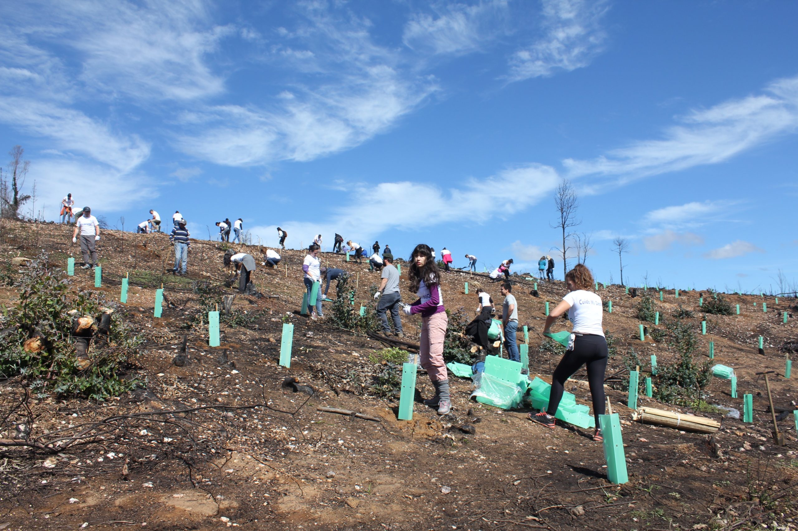
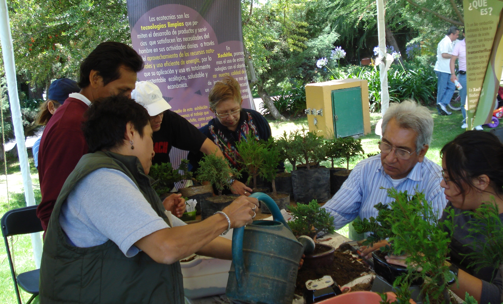

Nuestra misión es concientizar sobre el medio ambiente a las nuevas generaciones
Acceso para miembros
¿Quienes somos?
Mundo Verde es una organización sin fines de lucro comprometida con sembrar hoy las acciones que darán fruto en las generaciones del mañana. Creemos que cada persona tiene el poder de impactar positivamente su comunidad, y que las pequeñas acciones colectivas pueden transformarse en un legado duradero.
Desde nuestra creación en el año 2021, trabajamos en conjunto con voluntarios, educadores, líderes comunitarios y aliados estratégicos para impulsar proyectos enfocados en el medio ambiente, la educación y la acción social solidaria. “Lo que dejaremos en este mundo”. No es solo un mensaje: es nuestro propósito.
Nuestra mision en este mundo
Somos una organización que se centra en la concientización medioambiental y en la preservación de la naturaleza, promovemos acciones que inspiran un cambio hacia el entorno que habitamos. Nuestro objetivo es educar, movilizar y acompañar a las personas y comunidades que busquen un camino hacia una convivencia más respetuosa y responsable con el planeta.
Creemos que el cuidado del medio ambiente es esencial para un cambio rotundo hacia el camino que esta tomando la humanidad, y por ello trabajamos para crear conciencia sobre el impacto de nuestras acciones cotidianas. A través de campañas, talleres, proyectos comunitarios y acciones directas, buscamos proteger los ecosistemas naturales y fomentar el desarrollo sostenible.
Así las generaciones futuras no sufran de las consecuencias contra el medioambiente provocadas en nuestra actualidad
Nuestro plan a futuro
En Mundo Verde no nos quedamos quietos. Soñamos en verde y trabajamos en serio. Ya sembramos bastante, pero sabemos que aún queda mucho bosque por crecer. Por eso, estos son algunos de nuestros próximos pasos:
Una escuela verde, en cada barrio
Queremos ir más allá de los talleres sueltos. Estamos desarrollando un programa llamado “Escuela Viva”, donde vamos a acompañar durante todo un año lectivo a 10 escuelas públicas con huertas, compostaje, actividades al aire libre y hasta energía solar básica. No buscamos invadir contenidos, sino abrir la puerta a una nueva forma de aprender (y respirar).
Barrios en movimiento
El aire de nuestras ciudades pide ayuda. Por eso, estamos armando el proyecto “Movete Verde”: bicicleteadas comunitarias, reparaciones de bicis, estaciones de agua gratuita y mini talleres sobre movilidad sustentable. ¿Lo mejor? Lo pensamos con vecinos, no desde la oficina.
Mundo Verde Digital
Sabemos que no todo pasa en la calle. Estamos diseñando una plataforma virtual donde cualquiera pueda anotarse como voluntario, proponer campañas o acceder a recursos (plantillas, manuales, mapas de reciclaje, etc.). Queremos que ser activista ambiental no sea difícil ni excluyente.
Ampliación del alcance territorial
Nuestro objetivo es llegar a más regiones del país, especialmente aquellas que enfrentan problemáticas ambientales graves como deforestación, contaminación de ríos o falta de servicios de reciclaje. Buscaremos alianzas con municipios y organizaciones locales.
Transparencia y tecnología
Implementaremos un sistema digital de seguimiento de proyectos y donaciones para que nuestros colaboradores puedan ver en qué se transforman sus aportes.
Energía para todos
Buscamos lanzar un programa de acceso a energía solar comunitaria, con kits básicos para escuelas rurales y centros comunitarios. Queremos que la transición energética no sea solo para empresas, sino para la gente común.
Aire Limpio, Calles Vivas
Queremos monitorear la calidad del aire en barrios urbanos e impulsar microbosques urbanos y techos verdes. Vamos a trabajar con universidades y municipios para que cada árbol nuevo tenga un propósito claro: enfriar, purificar, habitar.
Proyectos en curso
Concientización en Escuelas: Programa de educación ambiental en escuelas primarias, con talleres interactivos y huertas escolares. Participan más de 15 instituciones en tres ciudades.
Limpieza y/o desintoxicación de rios: Jornadas de limpieza y recuperación de espacios ribereños contaminados. Se trabaja con voluntarios y municipios locales.
Reforestación: Campaña de plantación de árboles nativos en zonas urbanas y rurales, con la meta de plantar 10.000 ejemplares para 2026.
Concientización en el hogar: Iniciativa que asesora a familias para implementar hábitos sostenibles en sus hogares (separación de residuos, compostaje, ahorro energético).

Reforestación de Mundo Verde junto a ciudadanos voluntarios
Enseñanza a niños sobre el medioambiente en escuelas
Limpieza y desintoxicación de ríos

Concientización del medioambiente mediante eventos y cursos
Implementación del desarrollo ecológico en el hogar
¡Nuestro espacio!
Estamos en Hurlingham, pero operamos para todo el AMBA. Nos especializamos en ayudar a quienes quieran asesorarse sobre los problemas que tiene nuestro medio ambiente, o ¡para unirse voluntariamente de forma presencial a nuestros proyectos!.
Reforestar y convertir este lugar en un Mundo mas Verde
Lo que hicimos
En Mundo Verde nos comprometemos a brindarte toda la ayuda necesaria para cuidar el medio ambiente